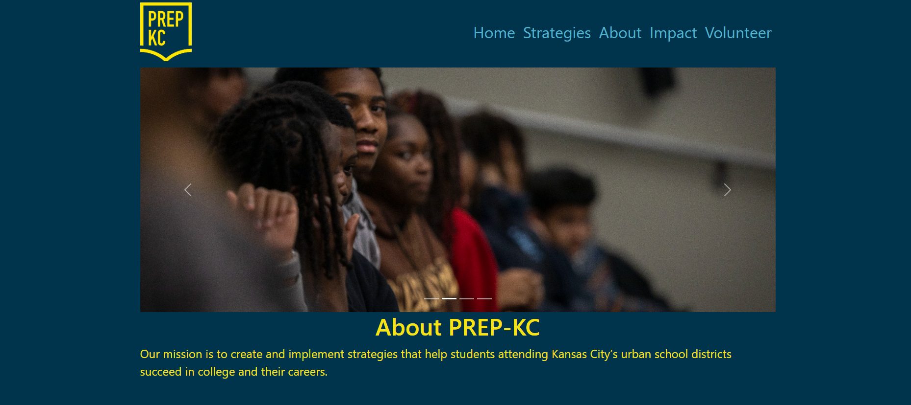
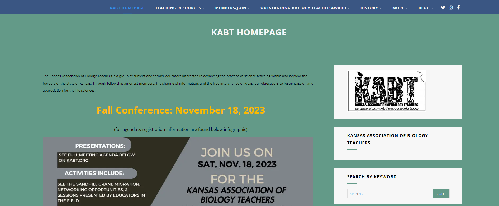

Web Development
Students have learned HTML/CSS along with professional and popular web builders like WordPress. Below are a few of the web development projects that students worked on, either in teams or individually.
PREP-KC Redesign
Early in the year, we experienced a technical issue that caused significant data loss on our previous PREP-KC website. We quickly developed a new version aligned with our new tech stack. Students have been busy making tweaks, design changes, and ensuring the site meets accessibility standards. Over the summer, student interns will work on a final stylistic version of the website.
KABT Website
Pathways to Tech students are responsible for hosting and maintaining the Kansas Association of Biology Teachers website, hosted on WordPress. This year, students made several tweaks and assisted with backend maintenance, including cleaning up the user database.
Student Showcases
Several students created portfolio websites using HTML/CSS, which you can view below.